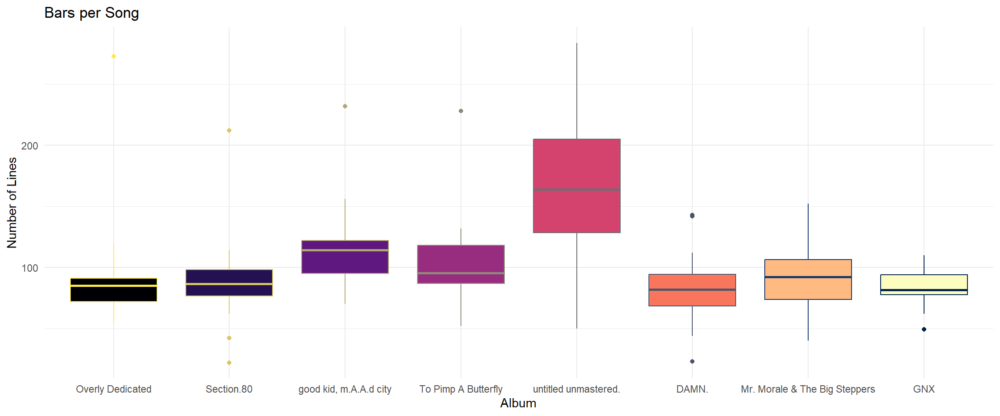
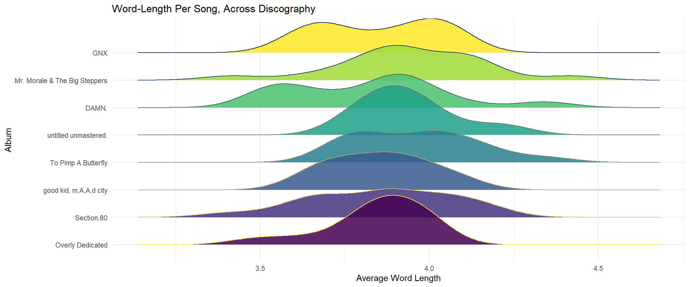
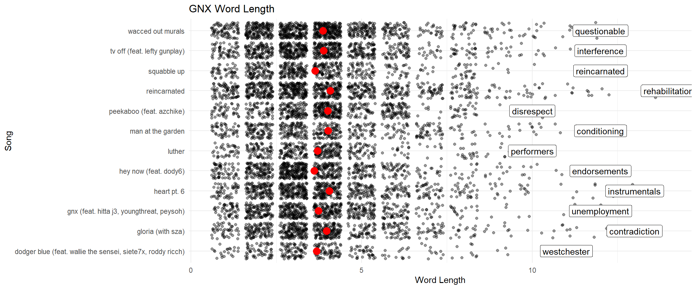
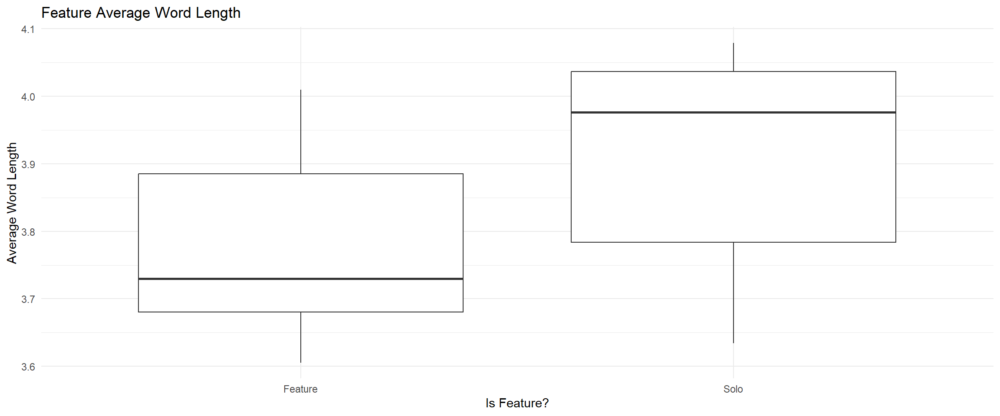
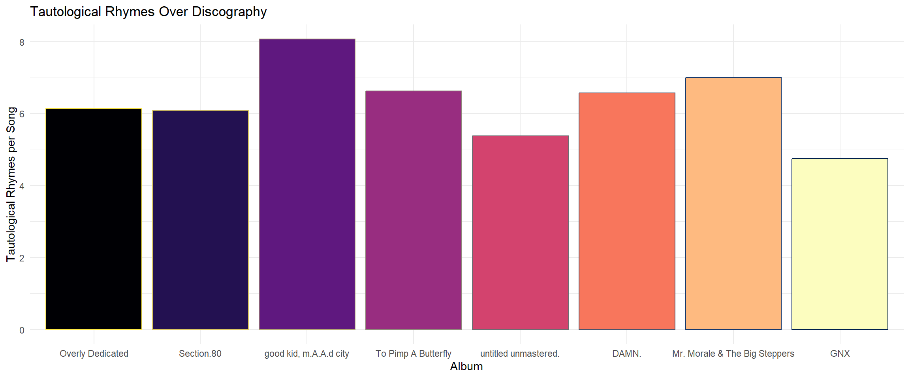
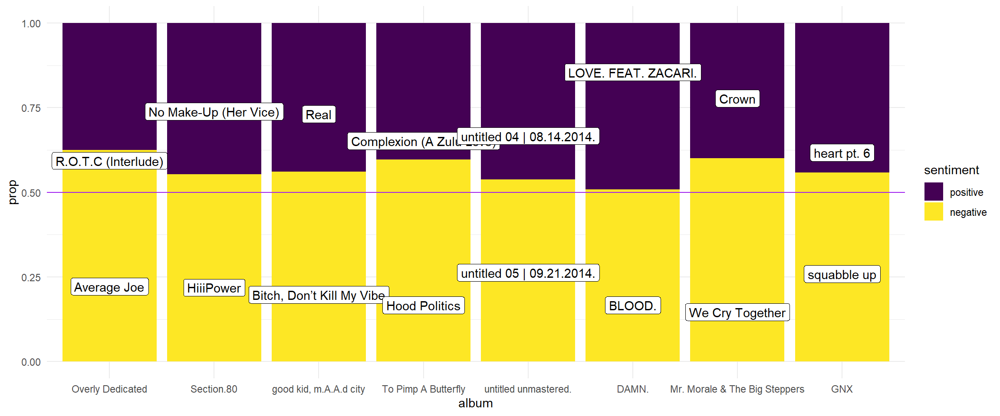

It is widely considered that, last year, Kendrick Lamar toppled Drake and established himself as the biggest rapper in modern hip-hop. While being the biggest makes him marginally less interesting, his career has reached an auspicious moment: it has acquired ‘legacy.’ K. has been in the game for more than two decades now, and, with eight critically-acclaimed albums, the legacy of Kendrick Lamar is just now something worth discussing. That is why, for my text analysis project, I chose to study the varied lyrics of Kendrick’s discography, from when he was a rambunctious gang-banging youth all the way to his current image as the Shepherd of black culture, poet of America, and father of two.
Scraping the Lyrics
The first task is getting the lyrics from each of his songs. I hand-selected the albums and urls from https://www.musixmatch.com, in order to weed out singles and E.P.s; then, I built a function that scrapes all the individual song urls for one album, iterates through each one, and records the lyrics. Finally, everything is compiled into one dataframe.
Code
# Main functionscrapealbum <-function(albumtitle, albumurl) {# Create empty tubble L =tibble(album =character(),song =character(),albumyear =integer(),lyrics =character() )# First step: get song urls res <-read_html(albumurl) urls <- res |>html_elements("a") |>html_attr(name ="href") |>str_subset("/lyrics/")# Second step: scrape scrape scrape base ="https://www.musixmatch.com"for (url in urls) { res <-read_html(str_c(base, url))# title title = res |>html_elements("h1") |>html_text()# year year = res |>html_elements("h2") |>html_text() |>str_subset("[0-9][0-9][0-9][0-9]") |>str_match("[0-9][0-9][0-9][0-9]") |>as.integer()# lyrics lyrics <- res |>html_element(".css-175oi2r.r-13awgt0.r-eqz5dr.r-1v1z2uz") lyrics <- lyrics |>html_text2() |>str_remove("Writer\\(s\\)(.|\n)*$") |>str_remove("^.*\n")# add L <- L |>add_row(album = albumtitle, song = title, albumyear = year, lyrics = lyrics) }return(L)}# album titlesalbums =c("Overly Dedicated","Section.80","good kid, m.A.A.d city","To Pimp A Butterfly","untitled unmastered.","DAMN.","Mr. Morale & The Big Steppers","GNX")# album linksalbumurls =c("https://www.musixmatch.com/album/Kendrick-Lamar/Overly-Dedicated-6","https://www.musixmatch.com/album/Kendrick-Lamar/Section-80-3","https://www.musixmatch.com/album/Kendrick-Lamar/good-kid-m-A-A-d-city-Deluxe-Version-1","https://www.musixmatch.com/album/Kendrick-Lamar/To-Pimp-a-Butterfly-6","https://www.musixmatch.com/album/Kendrick-Lamar/untitled-unmastered-1","https://www.musixmatch.com/album/Kendrick-Lamar/DAMN","https://www.musixmatch.com/album/Kendrick-Lamar/Mr-Morale-The-Big-Steppers","https://www.musixmatch.com/album/Kendrick-Lamar/GNX")Lyrics <-tibble(album =character(),song =character(),albumyear =integer(),lyrics =character() )# Main loopfor (a inseq_along(albums)) { Lyrics <-bind_rows(Lyrics, scrapealbum(albums[a], albumurls[a]))}# Save it for laterwrite_csv(Lyrics, "lyrics.csv")
Wrangling the Lyrics
Next, I needed to clean the data up and prepare it for various kinds of analysis. I started by ordering the albums by their associated release year. Then, I created a second tibble where each song was split up into different lines. Finally, I made a third tibble where each song was split up by word, using the str_split and boundary functions. For the second and third tibbles, I forced every character to be lowercase.
I began by analyzing several numerical features in the text data.
Bars per Song Over Discography
Many popular rappers today are known for fast-paced, one-note bangers that last two to three minutes and maximize fun and excitement. Kendrick Lamar, however, has several slow-burners in his discography; one might even say that if there was an analogue for the genre of the epic poem in rap, Kendrick might be the one to have created it. Furthermore, trends have changed over time, with popular music getting shorter and shorter; thus, I wanted to see how Kendrick’s discography reflects the amount of language per song.
Code
lyrics_lines |>group_by(album, albumyear, song) |>summarize(n_lines =n()) |>ggplot(aes(x = album, y = n_lines, fill = album, color = album)) +geom_boxplot() +labs(title ="Bars per Song",x ="Album",y ="Number of Lines" ) +theme_minimal() +theme(legend.position ="none") +scale_fill_viridis_d(option ="magma") +scale_color_viridis_d(option ="E", direction =-1)

Untitled Unmastered is an outlier here, which may suggest that Kendrick’s songs would be even longer if not for strict refinement and revision. Moreover, it seems that, after the TPaB era, the variation – if not the centers – of the distributions for each album get a lot lower. Every album before DAMN. has at least one very long song, but afterwards the variation is fairly slight, reaching its minimum at GNX.
Word Length Over Discography
Looking at things more granularly, word length may be a reasonable indicator of overall language complexity. Kendrick is known, of course, for having some of the most intricate and complex bars out there, and I wanted to see if this label has truly stuck with him or not. For this plot, I got the best results when taking the distribution of average word length across songs, for each album.
Code
library(ggridges)lyrics_words |>mutate(l =str_length(word)) |>group_by(album, song) |>summarize(wlength =mean(l)) |>ungroup() |>ggplot(aes(y = album, x = wlength, fill = album, color = album)) +geom_density_ridges(alpha = .85) +labs(title ="Word-Length Per Song, Across Discography",x ="Average Word Length",y ="Album" ) +theme_minimal() +theme(legend.position ="none") +scale_fill_viridis_d(option ="D") +scale_color_viridis_d(option ="E", direction =-1)

The average word length does seem to reach its highest point on To Pimp A Butterfly, widely considered Kendrick’s master work. However, another interesting trend is that the variation seems to increase dramatically from DAMN. onwards, which may indicate a shift in direction for Kendrick’s writing. In particular, GNX has a very large bimodal distribution, and, since the album is sonically very different from his other work, I wanted to take a closer look.
A Closer Look: GNX
I started by examining GNX on a song-by-song basis, where each black point represents a word, and the larger red points lie on the average for that song. Then, I separated the songs by whether or not they were solos, and compared the distributions.
Code
longest <- lyrics_words |>filter(album=="GNX") |>mutate(wlength =str_length(word)) |>group_by(song) |>summarize(mxword = word[which.max(wlength)], mxlength =str_length(mxword))lyrics_words |>filter(album=="GNX") |>mutate(wlength =str_length(word)) |>group_by(song) |>mutate(mwlength =mean(wlength)) |>ungroup() |>ggplot() +geom_jitter(aes(x = wlength, y = song), alpha = .4) +geom_point(aes(x = mwlength, y = song), size =4, color ="red") +geom_label(data = longest, aes(x = mxlength, y = song, label = mxword)) +labs(title ="GNX Word Length", x ="Word Length", y ="Song") +theme_minimal()

Code
lyrics_words |>filter(album=="GNX") |>mutate(wlength =str_length(word)) |>group_by(song) |>summarize(mwlength =mean(wlength)) |>ungroup() |>mutate(isfeat =ifelse(str_detect(song, "feat."), "Feature", "Solo")) |>ggplot(aes(x = isfeat, y = mwlength)) +geom_boxplot() +theme_minimal() +labs(title ="Feature Average Word Length",y ="Average Word Length",x ="Is Feature?" )

In the first plot, it appears that a lot of the more popular singles off of GNX, like Luther and Squabble Up, have slightly lower word lengths. I also noticed that average word length seemed to be related to features; in the second plot, it is obvious that the songs with features typically have shorter words, so much so that this may be the main contributor to the bimodal distribution visible in the ridgeline plot.
Expletives Over Discography
Next, just for fun, I loaded in a dataset of swear words and vulgar language, to see how Kendrick has used these words over time.
Code
swears <-read.csv("vulgar.csv")lyrics_words |>group_by(album) |>mutate(wpa =n()) |>ungroup() |>semi_join(swears) |>group_by(album) |>summarize(swearsperwords =n()/mean(wpa)) |>ggplot(aes(x = album, y = swearsperwords, fill = album, color = album)) +geom_col() +labs(title ="Expletives by Album",x ="Album",y ="Expletives per Word" ) +theme_minimal() +theme(legend.position ="none") +scale_fill_viridis_d(option ="F") +scale_color_viridis_d(option ="F", direction =-1)
Perhaps unsurprisingly, the number of expletives seems to have decreased as the weight of Kendrick’s subject matter increased. However, it is interesting to see that his vulgar language has jumped back up in the later part of his career. With this and trends of word length in mind, it seems feasible that some sort of change was made starting with DAMN., which is known for having short, simple titles for each song, that nonetheless reference deeply human subjects.
Tautological Rhymes
Finally, I used regex to count instances where Kendrick’s lines end with the same word. This can happen for two main reasons: either a line is repeated, as in a chorus, or a tautological rhyme is used, where the same word rhymes with itself.
Code
lyrics |>mutate(ntauts =str_count(lyrics, "( .+\n).*\\1")) |>group_by(album) |>summarize(ntauts =mean(ntauts)) |>ggplot(aes(x = album, y = ntauts, fill = album, color = album)) +geom_col() +labs(title ="Tautological Rhymes Over Discography",x ="Album",y ="Tautological Rhymes per Song" ) +theme_minimal() +theme(legend.position ="none") +scale_fill_viridis_d(option ="magma") +scale_color_viridis_d(option ="E", direction =-1)

Surprisingly, we can see that GKMC has by far the most repeated end words, while GNX has the least. While it would be easy to assume that more tautological lines means a less complex song, it’s important to consider that repetition can be both used and abused; while GKMC may cover less ground per song than GNX, I believe it is more intentionally structured and does a better job driving its messages home.
Sentiment Analysis
Sentiment Across Discography
In order to look at sentiment in Kendrick’s lyrics, I joined them with Bing’s sentiment lexicon. I calcuated the proportion of negative and positive words for each album, and put the most extreme songs on top of a stacked bar chart.
Code
bing_sentiments <-get_sentiments(lexicon ="bing")pwords <- lyrics_words |>inner_join(bing_sentiments) |>group_by(album,song) |>summarize(prop =sum(sentiment =="positive")/n()) |>slice_max(order_by = prop)nwords <- lyrics_words |>inner_join(bing_sentiments) |>group_by(album,song) |>summarize(prop =sum(sentiment =="negative")/n()) |>slice_max(order_by = prop)lyrics_words |>inner_join(bing_sentiments) |>mutate(sentiment =fct_relevel(sentiment, c("positive", "negative"))) |>ggplot() +geom_bar(aes(x = album, fill = sentiment), position="fill") +geom_hline(yintercept = .5, color ="purple") +geom_label(data = pwords, aes(x = album, y = prop, label = song)) +geom_label(data = nwords, aes(x = album, y =1-prop, label = song)) +theme_minimal() +scale_fill_viridis_d(option ="D")

All of Kendrick’s albums are more negative than positive, but still, despite the stereotypes of violence, drugs, and sex that are often associated with rap music, or the association of Kendrick’s music with weighty themes like racism and human suffering, every album gets fairly close to the 50% mark. In fact, Kendrick seems to have gotten his most optimistic on DAMN., which is an extremely polarized album.
Word Clouds
I wanted to look at the words of K.’s most positive and most negative songs a little more closely. The first word cloud I made is for LOVE., which may be the most positive song simply because of how often love is mentioned; the second wordcloud is for We Cry Together, which, if you have listened to this song, you know why it would be the most negative. Anyone that has listened to it would also be aware that a lot of the song is made up of expletives, so I decided to remove most of the words to ensure my wordcloud didn’t look like a drunk man’s post-toe stubbing speech bubble.
In general, the variation over Kendrick’s discography does not change in dramatic and remarkable ways; through it all, Kendrick has remained the same ambitious artist we all know. Nonetheless, there are features worth further examination. Mainly, many trends indicate a shift starting with DAMN., which aligns with a major moment in Kendrick’s career, after receiving the highest accolades for TPaB and becoming the darling of the intellectual music industry. DAMN. is, in many ways, Kendrick’s transition into becoming a part of popular music, and his reckoning with the darker significance of that transition, which remains unresolved to this day. Mr. Morale & The Big Steppers, his most negative album, sees him grappling with this in particular. Still, GNX sees him moving closer to a middle line, and, perhaps, we will see a new era for Kendrick in the near future.